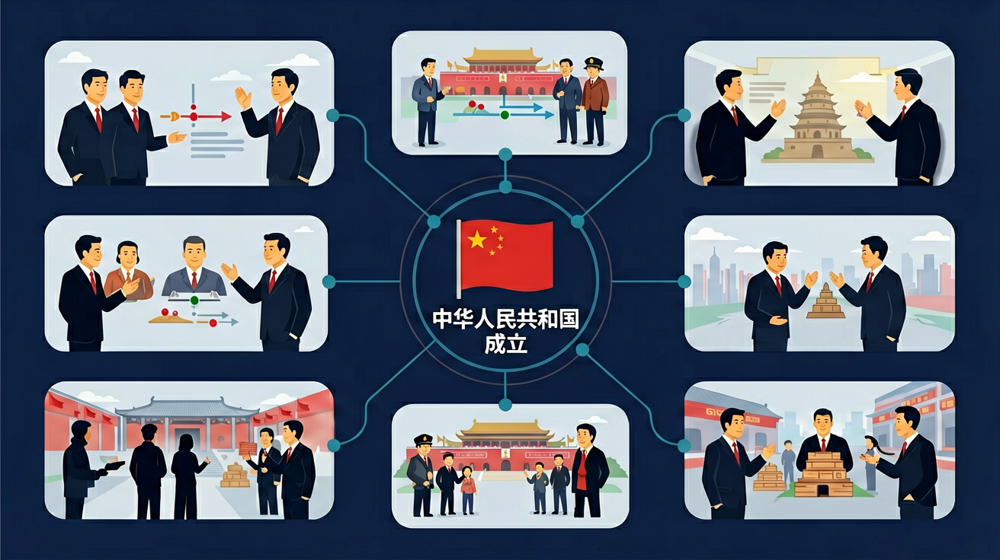

认识中华人民共和国成立的伟大意义；概述新中国巩固人民政权的主要举措；认识新中国为民主政治建设和向社会主义过渡所作出的努力。

🎯 能说出新中国成立的时间、地点和标志性事件
🎯 能分析新中国成立的历史条件和国际环境
🎯 能判断新中国成立对中国和世界的意义
❓ 为什么说新中国成立是‘站起来’而不是‘富起来’？
❓ 当时老百姓的生活到底有多苦？
❓ 新中国成立时其他国家是怎么看我们的？
学完这一课，这些问题你都能自信地回答。
新中国成立时通过的临时宪法是？
下列不属于新中国成立历史条件的是？
中华人民共和国成立是高中历史的重要内容。认识中华人民共和国成立的伟大意义；概述新中国巩固人民政权的主要举措；认识新中国为民主政治建设和向社会主义过渡所作出的努力。
了解20世纪50—70年代中国探索社会主义建设道路的曲折发展和伟大成就，认识“文化大革命”的错误及教训；理解政治、经济、外交、国防等领域所取得的成就在新中国历史上所具有的开创性、奠基性意义。
点击时代/图层按钮切换地图；悬停边界，点击城市标记查看说明。
把卡片拖到核心概念 / 方法技能 / 应用情境 / 常见误区。
拖完 4 项后自动判分。
1949年新中国成立，结束了百年来屈辱与分裂的局面，中国人民站起来了，开始由新民主主义向社会主义过渡。巩固政权、恢复经济、抗美援朝与社会主义改造等，奠定国家发展新基石。
对内：结束半殖民地半封建；对外：改变国际格局中的中国地位；对民族：开启历史新纪元。结合《共同纲领》说明建国初期政权性质。
常见误区：常见误区是把1949年直接说成社会主义制度确立（后者以三大改造完成为标志）。
新中国成立标志着？
1. 国庆阅兵装备展示中的历史维度分析。2019年阅兵式上DF-41导弹方阵与1949年"万国牌"装备的对比，直接体现建国初期"进口苏制米格-15"到如今自主研发的军工发展脉络，需要运用建国初期工业基础薄弱的史实进行解读。
2. 粤港澳大湾区建设中的政策连续性观察。当前"一国两制"实践可追溯至建国初期的"暂时不动香港"战略决策，1949年10月解放军止步深圳河的历史选择，在今天港珠澳大桥等工程中显示出长期战略的连贯性。
3. 外交档案数字化中的史料考证。美国国务院2023年解密的1949年外交电文显示，杜鲁门政府曾评估"中共政权可能很快崩溃"，这类原始文献的电子化检索，使学生在分析建国初期国际环境时能直接调取杜勒斯"等待尘埃落定"政策的原始表述。
1. 问题：为何《共同纲领》未直接采用"社会主义"表述？引导分析：注意比较1949年纲领与1954年宪法的根本区别，联系建国初期经济构成（如民族资产阶级占工业产值48.7%），思考"新民主主义"阶段的历史必然性。可参看刘少奇"巩固新民主主义秩序"的讲话背景。
2. 问题：苏联1949年10月2日承认新中国为何快于其他社会主义国家？引导分析：对比1945年《中苏友好同盟条约》与1950年《中苏友好同盟互助条约》的条款变化，关注斯大林对"东北权益"的战略考量，注意中苏建交电报中"率先"一词的外交信号意义。
当检视1949年政权更迭时，先要理解解放战争三大战役（歼敌154万）形成的军事态势，接着分析新政协筹备过程中"五一口号"（1948年）到《共同纲领》制定的政治博弈。毛泽东"占人类总数四分之一的中国人从此站立起来了"的宣言，需放在鸦片战争后109年丧权辱国史的语境中解读。政权建立初期面临的经济困境十分具体：上海1949年物价指数比1937年上涨36万亿倍，这引出了银元之战、米棉之战的必要性。外交领域"另起炉灶"政策在苏联第一个承认新中国的案例中得到验证，但英国1950年1月6日承认时仍保留在台领事馆的暧昧立场，又体现了冷战格局下的复杂态势。最后过渡到社会主义改造的伏笔，可见于建国头三年国营工业产值增长287%但私营经济仍占63%的产业结构矛盾中，这种张力为理解后续历史发展提供了基准线。
And：学生知道1949年新中国成立
But：但多数人不知道具体筹备细节
Therefore：理解建国仪式的历史意义
1949年10月1日下午3点，毛泽东主席在天安门城楼向全世界宣告中华人民共和国成立。这是经过3年解放战争（1946-1949）和长期革命斗争后的成果。例如：开国大典上54门礼炮齐鸣28响，象征参加政协会议的54个单位和中国共产党28年奋斗史。
🌍 就像学校运动会开幕式需要精心准备流程一样，开国大典前筹备了升旗时间精确到秒、国歌演奏速度等细节，体现国家建立的庄严性。
开国大典礼炮28响象征什么？
1. 错误认为"1949年10月1日中华人民共和国成立即完成全国解放"。实际上当天西藏、海南岛等地尚未解放（海南1950年5月解放），这是混淆政治宣言与实际控制范围的表现。认知根源在于将开国大典的象征意义等同于行政实效，需结合《共同纲领》临时宪法地位和后续解放战争进程理解。
2. 混淆"中国人民政治协商会议"与"全国人民代表大会"的职能。有学生误将1949年9月政协第一届全体会议通过的《共同纲领》视为人大立法，这是忽视建国初期过渡性政体特点。需明确当时政协代行人大职权，直到1954年宪法颁布才确立现行制度，具体体现在《共同纲领》第13条对政协职权的特殊规定。
3. 高估建国初期的工业化水平。部分学生根据1953年"一五计划"倒推认为1949年已具备工业基础，实际上1949年钢产量仅15.8万吨（不足印度1/10），这要求区分政权建立与经济建设的时序关系，需结合毛泽东"现在我们能造什么"的著名发问理解。
复制提示词到 AI 学伴，生成「中华人民共和国成立」的时间轴或事件提纲；也可以上传你手绘的示意图，请 AI 学伴点评。
复制后可粘贴到 AI 学伴继续对话。
关于新中国成立初期的政权性质，最准确的是
分析1949年征集的3012幅国旗设计稿
关于中华人民共和国成立的学习，哪种做法最科学？
选一个并查看反馈。
先独立作答，再点选项查看对错与错因。
中国人民政治协商会议第一届全体会议通过《共同纲领》的时间是
下列哪项不属于《共同纲领》的内容
新中国成立时担任中央人民政府主席的是
1949年____月____日下午3时，开国大典在北京天安门广场举行
答案：10 1
必须准确记忆这个历史时刻
《义勇军进行曲》被确定为代国歌是在____年
答案：1949
与新中国成立同步确定
✅ 1949-1956是新民主主义社会阶段
💡 混淆《共同纲领》和1954宪法性质
✅ 西藏1951年才解放，晚于建国时间
💡 地图认知不完整
口诀：四九十一北京城，五星红旗迎风升
类比：就像小区换了新物业，重新制定管理规则
（高考题）新中国成立初期实行‘一边倒’外交政策的根本目的是？
若比较1949年中美政权更替，最本质区别是？
某城市筹备‘建国75周年’展览，最适合用来说明的转型是？
点击节点跳转到对应章节；可切换布局。